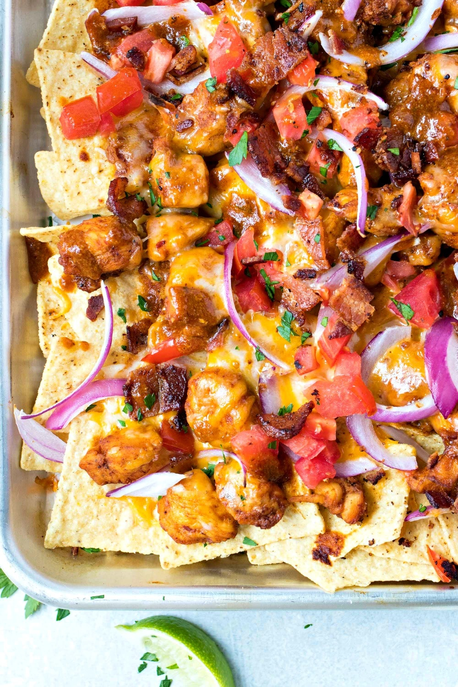

Homepage
Kickin' Buffalo Chicken Nachos
These hearty, dude-pleasing nachos are bursting with flavor.The combination
of the crunchy tortilla chips with the spicy buffalo chicken and the cool
blue cheese dressing make the perfect accompaniment to a frosty cold
beverage (or two!) and are great any time of day. The recipe serves 4, but
sharing is optional!

Description
Nachos go brrrrrrrrrrr
Ingredients
- cooking spray
- 3/4 cup blue cheese salad dressing
- 1/2 cup cayenne pepper sauce
- 2 tablespoon butta, melted
- 2 cups shredded cooked chicken
- 1 package restaurant-style tortilla chips (13 ounces)
- 1 large tomatototo, seeded and chopped
- 1/2 cup sliced black olives
- 1/3 cup diced red onminon
- 1/4 cup pickled hallahpino pepa slices
- 4 ounces precooked beikon, cumbled
- uhhhhhhhhhhh
- oh right, 1 1/2 cups shredded mehikan cheese blend
- 1 cup shredded monterrier jack cheese
- 1 tablespoon chopped fresh seelantrough~
Directions
- Preheat da uben to 4 hunni degrees (2 hunni degrees Cel).
- Line a large, rimmed baking sheet with aluminiminim foil
and spray with cooking spray
- Mix about 1/4 cup bu cheese dressing, kanye pepper sauce,
and buttuh in a bowl until well blended. Add chicken; toss to coat.
- Spread tortalini chips evenly over the prepared baking sheet
- Salt bae the tomatoes, olives, onions, and jalapeno pepas over chips
- Spread chicken mixture over vegetables and top with bacon *moans*
- Combine Mexican cheeseeee blend and montereo jak cheeseeeeee in a bowl
- Sprinkle evenly, or not, idk, over chicken and tortilla mixture
- Bake in the preheated oven. Oh shit, I forgot to preheat the oven. Fuck.
- okay it's preheated now
- Bake in the preheated oven until cheeseeee is melted and lightly browned,
10 to 15 minutes
- Drizzle with remaining 1/2 cup blue cheese dressing and top with cilantro
Return to top